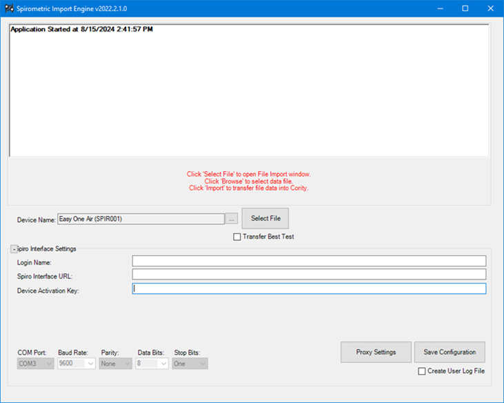
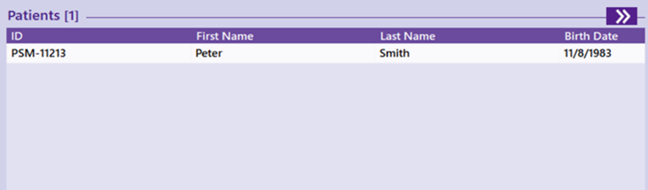
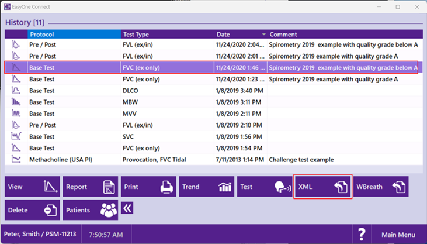
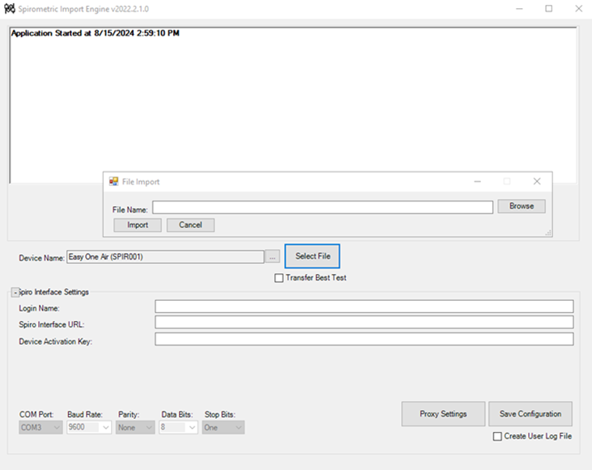

Importing Test Results from the EasyOne Air or Easy on-PC Spirometers
This article outlines the steps required to import test results from the EasyOne Air or Easy on-PC Spirometers into GX2.
Configuring the Spirometer Import Engine
Launch the Cority Spirometric Import Engine.
Device Name - select the EasyOne Air or Easy on-PC device created in Cority > Occ Health > Equipment.
Input the appropriate paths in the Spirometer Interface Settings fields:
Login Name - the Cority login name.
Spiro Interface URL - the URL for the Cority application (e.g. https://<your domain>)
Device Activation Key - to obtain the activation key, log in to Cority and then append the Cority URL with /security/retrieveapikey.rails For example, if your Cority URL is https://<your domain>, change the URL to https://<your domain>/security/retrieveapikey.rails
Click Save Configuration.

Importing the Data
Open EasyOne Connect
Perform your tests (Note: These must be FVC tests and not FVL tests)
Once complete, you have two options:
Utilities > Export XML (Go to Step 3)
Export a specific test (Go to Step 2)
To export a specific test
Launch EasyOne Connect
On the Main Screen, click Patients
Select a patient from the list by double clicking the name of the patient.

Expand the menu at the bottom by clicking the right arrows, highlight the study you want to export, then click XML.

Save the file to your desired location, then import it into Cority using their designated
In the Spirometer Import Engine, click Select File.
If you did 1.1 above, "Transfer Best Test" should be set to true before you click “Select File.”
Select the XML File that you exported from EasyOne Connect
Click Import

Confirm in Cority the tests were completed.
Logs of the imports will be shown in the Admin > Logs > Process Status & Log, Pulmonary Test Import View.
The imported records if successful, will be shown in Occupational Health > PFT.
If you face issues while setting up and testing the interface, contact Cority Customer Support.